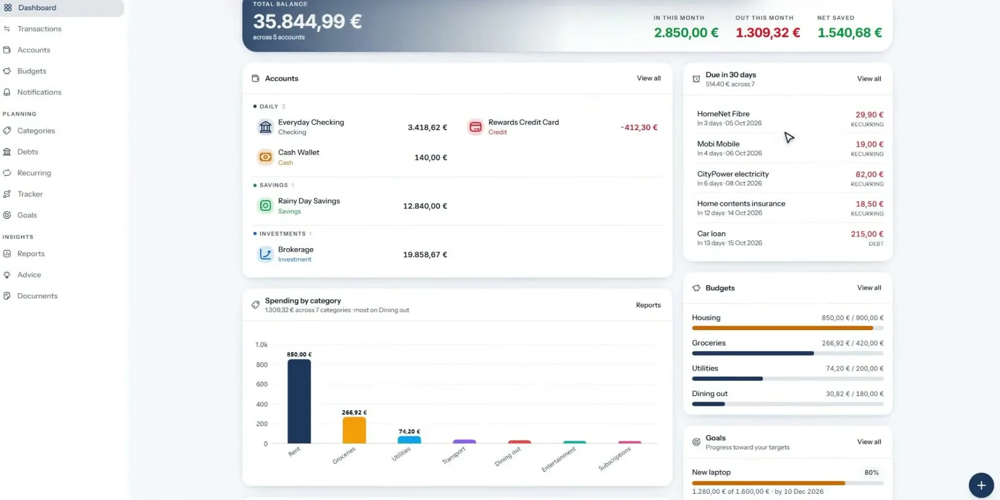

Dashboard
Balances, bills due in the next 30 days, budgets and goals on one screen.
Self-hosted · Open source · EN / EL
Accounts, budgets, debts, goals, bank sync, investments and an AI advisor. One Docker container and one SQLite file, with no subscription and no third party reading your statements.
A tour of the app
Also inside
Everything below ships in the same container. The parts that talk to outside services are off until you set them up.
Privacy
Out of the box, nothing does. Switch on a feature to see which service it contacts and what it sends.
Accounts, transactions, budgets, debts, goals, reports, rules and documents are always computed and stored locally.
Security & privacy docs →Install
You need Docker with Compose and openssl. The prebuilt image runs on a PC, a home server or a Raspberry Pi.
$ git clone https://github.com/Lefyd24/HomeFinance.git $ cd HomeFinance && cp .env.example .env # put two values from `openssl rand -hex 32` in .env $ docker compose up -d $ docker compose run --rm -v "$PWD/scripts:/app/scripts:ro" \ app python /app/scripts/create_admin.py \ you@example.com 'a-strong-password' "Your Name" ✓ open http://localhost:8223
Not by default. There is no analytics, telemetry or vendor account. AI chat, bank and brokerage sync, market data and email only contact an outside service if you turn them on.
Nothing. It's open source under the ISC license. The optional AI advisor uses your own OpenRouter key and shows the cost of every answer, with monthly caps.
Yes, each in their own private space. Registration is invite-only, and everyone you invite gets a separate login with separate accounts, transactions and budgets. Data is not shared between users, so there are no joint accounts or combined household budget.
Your data is one SQLite file in a data folder. Back up that folder and your two secret keys.